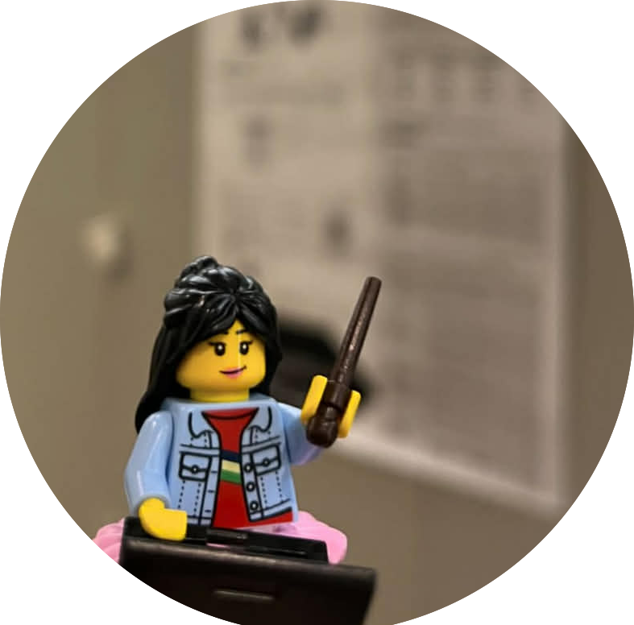

Hello!
I’m Mondheera Pituxcoosuvarn AKA Ampere
Lecturer & Human-Computer Interaction Researcher
Faculty of Information Science and Engineering, Ritsumeikan University, Japan
Hello! I’m "Ampere" Mondheera Pituxcoosuvarn.
I am a Lecturer at the Faculty of Information Science and Engineering, Ritsumeikan University, Japan. My research lies in Human–Computer Interaction (HCI), Human–AI collaboration, Entertainment Computing and Computer-Supported Cooperative Work (CSCW), with a particular focus on interactive systems for learning, communication, and creative play.
I am especially interested in collaborative learning, STEM education, edutainment, intercultural and multilingual communication, and design thinking. My recent work explores how AI can support language learning, multilingual communication, creative interaction, and playful educational experiences.
2-150 Iwakura-cho, Ibaraki, Osaka 567-8570, Japan
Background
Work Experience
Education
Research Interests
Core Research
Human–Computer Interaction (HCI), Human–AI Collaboration
Applied Domains
Collaborative Learning, STEM Education, Edutainment
Emerging Direction
Interactive Play, Creative Systems, Entertainment Computing
Background & Foundations
CSCW, Multilingual Communication, Intercultural Collaboration
Publications
Other
I am an AFOL (Adult Fan of LEGO) and a contestant on LEGO MASTERS JAPAN (2023), where I explored storytelling through hands-on creative building. I also serve as an organizing member of Japan Brickfest (JBF), supporting community-driven creative play.
My personal interests—ranging from ballet and music to scouting, volunteering, and reading—reflect my broader focus on creativity, play, and learning. These experiences directly shape my research on interactive systems, edutainment, and collaborative human–AI experiences.